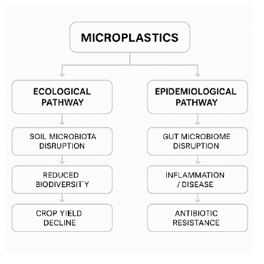
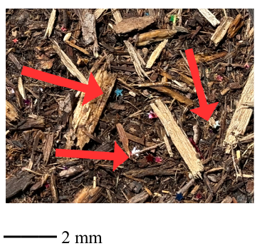
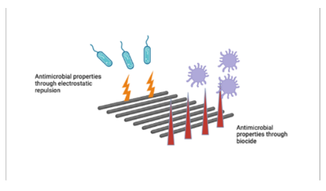

The pervasiveness of plastics in the world’s ecosystem is undeniable. In fact, the Environmental Protection Agency (EPA) (2024) reported that in 2018, plastics accounted for over 12% of municipal solid waste. Furthermore, of the approximately 8.3 billion tons of plastic that have been introduced into the world’s ecosystem since the mass production of synthetic polymers in the 1950s, only 9% has been recycled (Main, 2023), which begs the question, “Where does all of this plastic go?” Much of it remains in its original undegraded state and will continue to do so for centuries (Kubowicz & Booth, 2017). Incineration is a commonly used method for addressing the accumulation of plastic waste in the environment, but it comes with its own set of drawbacks, primarily those pertaining to the mass release of greenhouse gases into the atmosphere (Shen et al., 2020) and the public health concerns that stem from inhaling the toxic gases emitted from the burning of plastic (Velis & Cook, 2021). In order to facilitate the degradation of plastics, researchers have explored alternative methods for intervening in their chemical composition that would hasten this process. Such efforts, however, have inadvertently resulted in the fragmentation of plastic, so that it has not been eliminated from the environment, but reduced to the form of microplastics, which are exceedingly difficult to detect and extract from waterways, the atmosphere, and even agricultural production systems.
As recently as 2016, when scientists in Japan discovered a strain of bacteria (Ideonella sakaiensis) that could eat a form of plastic known as polyethylene terephthalate (PET), researchers have been exploring methods for employing bacteria towards similar ends. Prompted by the promise of this discovery, researchers worldwide have joined in the global efforts to engineer plastic-degrading microbes (Carpenter, 2021). This review therefore seeks to systematically examine the relationship between bacteria and plastics to assess the extent to which bacteria is a positive force when it comes to addressing the “plastic problem.” The research question guiding these analyses asks, “What are the epidemiological and ecological implications of the bacteria-plastic relationship?” Given this research question, this review represents a unique undertaking, as typically these issues are viewed from the perspective of ecology or public health, but rarely are they viewed from the vantage of both fields simultaneously. This article operates by the guiding assumption that the health of humanity depends on the health of the environment, and that these things should therefore be considered in conjunction with one another. A visualization of the relationship among the areas to be covered in this article are presented in Figure 1 below.
In this article, the term “bacteria” is treated broadly, so as to refer to a wide range of taxonomic classifications. Therefore, when the term is employed, it may include pathogenic types of bacteria, commensal bacteria, and mutualistic bacteria present in soil. The purpose of opting for “bacteria” as the preferred terminology throughout rather than wording that suggests the specific type or taxonomic family has to do with readability and the interdisciplinary audience towards which this review is intended.
This review begins by attempting to define microplastics. It then sets out to synthesize the existing scholarship on the implications of interactions between bacteria and plastics in terms of public health and the larger ecological system. After detailing the concerns associated with each area, the article then concludes by reflecting on avenues of research within the realm of bacteria and plastics that warrant further exploration. However, before exploring the various methods available for addressing the plastics problem, further examination of what exactly qualifies as a microplastic is warranted.

This review collected sources using an adapted version of the Preferred Reporting Items for Systematic Reviews and Meta-Analyses (PRISMA) approach. This was done to minimize the potential for bias in identifying, selecting, and synthesizing relevant studies. This review adheres to protocols established by the PRIMSA approach for aggregating qualitative literature by utilizing a specific search strategy, characterized by predetermined inclusion and exclusion criteria. This search drew upon four academic databases that were considered relevant to the subject matter: PubMed, Web of Science, ScienceDirect, and Google Scholar. To navigate within these databases, a combination of keywords were used to perform a Boolean search. These included “microplastics and “bacteria”; “microplastics” and “gut microbiome” or “soil microbiome”; “plastic-eating bacteria” or “plastic degradation”; “bacteria” and “plastic” and “disease vector”; “antimicrobial polymers” or “plant-based alternatives.”
This search was limited to English-language publications due to the author’s inability to accurately translate research written in other languages. The time period specified for the search was January 2000 to January 2024, as this timeframe was the most likely to retrieve up-to-date research. For context, as this article later discusses, the term “microplastics” was not even coined until 2004. “Gray” literature that is not entirely academic nor completely informal (e.g., from reputable government agencies like the EPA, NOAA, and WHO) was also included. To determine initial suitability for inclusion, the author screened titles and abstracts. If deemed suitable, the full text was then reviewed to determine potential eligibility more fully. A more robust description of the inclusion and exclusion criteria for the articles consulted in this study is included below.
The results of this search were then organized using a narrative synthesis approach and grouped according to their epidemiological and ecological implications. The synthesis of this information allows the article to conclude with future directions that explore viable solutions to the world’s plastics problem.
The term “microplastics” was first coined in 2004 by Thompson et al. (2004), who used the term to describe the infiltration of small plastic particles into marine environments. Since that time, the word “microplastics” has become commonplace in scientific communities and has even appeared in the mainstream news cycle and everyday conversations among the general public. Despite a growing awareness of microplastics, however, there remains little consensus on what qualifies as a microplastic. Some government-based organizations like the National Oceanic and Atmospheric Association (NOAA) (n.d.) define it according to size, specifying that microplastics refer to particles smaller than 5mm. Others consider the type of plastic, its shape, and even its origin as important to defining it. In examining microplastics’ origin, researchers distinguish whether it was derived from a primary or secondary source. Primary sources of microplastics are from items that directly generate microplastics (tire abrasion from driving on the road is a common example of a primary source of microplastics), whereas secondary sources come from the degradation of larger plastics in the environment (e.g., plastic bags, water bottles) (Song, 2022). Table 1 below details common types of primary and secondary microplastics, as well as their relative proportion of all marine plastic waste.
| Microplastic Source | Estimated Oceanic Contribution (%) | Primary Sources |
|---|---|---|
| Primary Source | 15-31% | - Laundering synthetic clothes (35%) |
| - Particles from tires on the road (28%) | ||
| - Personal care products (2%) | ||
| - Miscellaneous other sources (35%) | ||
| Secondary Source | 69-81% | Result from larger plastic degradation |
But their size is not the only reason that microplastics have become increasingly difficult to extract from various ecologies; it is also their pervasiveness. Microplastics seem to be everywhere one looks, if they know what they are looking for. Recently, while conducting field research, the author of this article discovered confetti embedded in the soil at a local park in the southeastern region of the United States. This type of microplastic would qualify as a primary source of microplastics in that it is intentionally produced at such a small size. While seemingly an innocuous accompaniment of celebrations, this review will detail how the presence of microplastics in the soil may disrupt the microbiome there.

Microplastics are even present in such remote locations as Antarctica. In fact, one scientist from the National Institute of Science and Technology (2022) remarked that “People have looked at snow in Antarctica, the bottom of glacial lakes, and found microplastics bigger than about 100 nanometers”. He goes on to elaborate that the size of these microplastics indicates that they were “likely not small enough to enter a cell and cause physical problems,” which alludes to how microplastics can interfere with natural life at the cellular level. These findings are likewise corroborated by more foundational studies, such as those conducted by Thompson et al. (2009), who empirically demonstrated not only how widespread and diffuse marine plastic pollution was, but how it could affect countless aspects of marine life through uptake at multiple junctures within the food chain.
“Epidemiology” refers to the study of the “distribution and determinants of disease” (Columbia University, 2020). Within the field of epidemiology, the negative health effects brought on by plastics has been well documented. One type of chemical compound involved in the manufacturing of plastics, known as “Bisphenol A” or “BPA,” is notorious in this regard. BPA has proven to be an endocrine disruptor and thus negatively affects the body’s hormonal and reproductive systems (Rubin, 2021). BPA has also been shown to disrupt the microbiota of the human intestinal tract. Studies of female mice exposed to BPA, for example, found that the rodents had much higher levels of certain bacteria, like Mogibacteriacae, Sutterella spp., and Clostridiales bacteria. (Lear, 2021), (Javurek et al., 2016). As the effectiveness of the gut microbiome depends on the delicate balance of bacteria, the impact of BPA could be potentially troubling in this regard.
This is why, in 2012, the U.S. Food and Drug Administration (FDA) banned the use of BPA in children’s sippy cups and baby bottles (Hamilton, 2012). It is important to point out, though, that BPA is only harmful when heated. As Tarafdar et al. note, “Leaching of BPA is triggered as a result of heat treatment to polymeric materials” (Tarafdar et al, 2022). Therefore, much of the harm caused by this ingredient in plastics may be confined to specific food containers, like canned goods and storage containers.
The ill effects of plastics have also raised concerns for the gastroenterological (GI) health of people and animals alike. Scientists are just now beginning to understand the importance of “good” bacteria to a variety of organisms’ (humans included) health. The microbiotic flora of the human intestinal tract has received increasing attention as researchers have gained greater insight into how maintenance of the delicate balance between “good” and “bad” bacteria can prevent certain gastrointestinal diseases and cancers (Huang & Liu, 2019). This explains the preponderance of probiotic products that have entered the consumer market in recent years, which seek to increase the number of helpful bacteria in one’s digestive tract.
However, the unintentional introduction of microplastics into the human GI tract has been associated with changes to the human gut microbiome, and thus has raised concerns about microplastics’ potential health effects. Cetin et al. (2023), for example, found that there was a higher presence of microplastics found in tissue samples from patients with colorectal cancer. This suggests that there may be a correlation between microplastics and cancer. In commenting on the bacteria-plastic relationship in the context of the gut biome, Dai et al. (2024), note that gut bacteria “metabolize dietary indigestible carbohydrates into short-chain fatty acids” that can prevent the formation of colorectal cancer, but that this process can be disrupted when microplastics are present. That said, while there may be a correlation between the presence of microplastics in the gut biome, the authors are careful not to assert causation and state that while studies show that microplastics are associated with intestinal irritation and disrupt the composition of the gut flora, “The link between microplastics and CRC is less well-established.” The connection between pre-existing conditions like irritable bowel disease (IBD), for example, may play a mediating role in relationship among microplastics and colorectal cancer, as well as genetics, lifestyle, and host of other variables that may not be adequately isolated.
Some researchers, however, see the relationship between microplastics and colorectal cancer as supported by empirical studies. Consistent with what is asserted by Dai et al. (2024) found that the primary mechanism by which microplastics affect the intestinal tract is by damaging the epithelial lining of the colon. The damage to this protective layer of the colon then places individuals with inflammatory bowel disease (IBD)—individuals who are already at increased risk of developing colon cancer—at a greater risk. So, while there may be a link between the presence of microplastics in the intestinal tract and colorectal cancer, the literature does represent this relationship as directly causal, but the result of a complex series of interactions between other risk factors (e.g., like having IBD).
Along these same lines, researchers studying microplastics in fish’s gills and digestive tract found that it was not the chemical composition of microplastics that negatively impacted the health of the fish, but the damage it did the protective mucosal membranes that serve as a barrier to harmful viruses and bacteria (Seeley, 2023). Therefore, the logical extension of this finding in terms of its implications for human health is that in order for microplastics to render humans more susceptible to disease, it would need to first disrupt these protective membranes.
But how are plastics entering the human digestive tract? CNN reports that microplastics are ubiquitous in the food we eat, and are present in anything from apples, carrots, and lettuce to seafood and chicken nuggets (LaMotte, 2024). One study conducted by researchers at the University of Queensland found that a single 100-gram serving of rice included 3 to 4 milligrams of microplastics (Dessi, 2021). It is, however, important to contextualize these figures, as the current thresholds for what is considered “toxic” when it comes to dietary microplastic exposure is poorly defined and far from standardized on a global scale (EFSA Panel on Contaminants in the Food Chain, 2016).
Another study by Aydin et al. (2024) analyzed the presence of microplastics in 210 samples of some of the most commonly consumed fruits and vegetables. They discovered that the tomato samples in their study had the highest contamination rates at “398,520 particles individual−1 year−1 for Estimated Annual Intake (EAI).” While these findings may be concerning, it is important to note that methods for microplastic detection vary in sensitivity and validation. Therefore, reported concentrations may be impacted by the level of detection available, and the possibility of false positives or negatives (Environmental Protection Agency, 2024). Another point of consideration, the authors note, is that contamination is also attributable to the manufacturing and marketing phases of agricultural production, as the larger microplastics cannot be taken up by the plant’s xylem transport system. However, mitigation strategies currently being deployed, such as washing produce, redesigning packaging for greater durability, and more effective irrigation filtration, may lessen the presence of microplastics in the digestive tract and any associated disruptions (Araujo et al., 2021).
The notion that plants cannot absorb microplastics in the soil, however, remains a point of contention within the literature, with researchers being careful to note that absorption depends on the size of the particle. “Microplastics,” encompassing particles 5 millimeters to 100 nanometers in size, are distinguishable from “nanoplastics,” which may be smaller than 1000 nanometers in size (Ho, 2024). While the scholarship on this topic has shown that microplastics are too large for plants’ root systems to take up, the same cannot be said for nanoplastics. Additionally, it is worth noting that plants absorb nutrients through other pathways than just their root systems, including through their leaves. A study by Sun et al. (2021), for instance, examined nanoplastic absorption in maize plants, with their results indicating that further risk assessment in air-transported nanoplastics and foliar absorption is warranted (2022). Nanoplastics have a significantly higher permeability than microplastics at the cellular and subcellular level. This property is what allows them to cross certain barriers that are traditionally considered relatively more impermeable, such as epithelial membranes and the cell walls of roots. Over time, the migration of nanoplastics into these new environments is what allows them to accumulate in both plant and animal tissue alike. Because of this ease of migration and subsequent accumulation, recent studies have found that these plastics can impair intraceullular functioning, accelerate or exacerbate inflammatory responses, and interfere with hormonal processing across organisms (Hoorman, 2016).
Outside of the plastic particles transported by water and air, much research has been dedicated to examining its accumulation in the soil and its effects therein. Much like the microbiome relies on the presence of certain bacteria to function properly, so does the microbiome of the soil in which crops are cultivated. Bacteria play an integral role in improving soil structure, recycling nutrients, and aiding in water recycling (Chen, 2024). The presence of plastics in the soil, however, disrupts the microbiota present there. For instance, Rillig et al. (2024) found that soil with plastics in it had a lower microbial diversity than the surrounding soil without comparable levels of plastics present. With a lower diversity of beneficial bacteria, the soil quality is thus negatively impacted, and a poorer soil quality, by extension, translates to less healthy crops and reduced crop yields.
In addition to posing a potential threat to microbial diversity, scholarship on this subject has emphasized the long-term and systemic consequences of microplastics in land-based ecosystems. Chen et al. (2024) found that microplastics negatively impacted the soil density, making it less porous35. This holds important implications for water absorption and retention, root proliferation, and the plant’s ability to withstand changing environmental conditions like droughts.
While microplastics can interfere with nutrient uptake in this way, it can also accelerate the migration of other soil contaminants. Research has shown that microplastics can absorb herbicides that reduce microbial breakdown, which in turn allows harmful chemicals to endure and harm soil health in the long run. When one considers the broad-scale agricultural implications, this issue becomes especially concerning. The presence of microplastics has been linked to reduced photosynthesis, hormonal disruption, blocked roots, and inhibited seed germination, all of which can negatively impact crop yield (Illanes et al., 2025). One study found that tomato plants grown in greenhouses using soil contaminated with microplastics produced 28% fewer flowers compared to those grown in uncontaminated source (i.e., the control group) (Washington Post, 2025). With a global population that is growing each year, disrupting the food production chain in this way can result in far-reaching consequences.
Azeem et al. (2021) likewise noted that microplastics affect soil microbiota because they both inhibit and encourage the growth of certain bacteria. The authors add that because of microplastics’ ecological impact with regard to soil composition, the “surface of MP [microplastics] may be a hotspot for microbial development.” This point suggests plastics are not causing disease, however, but acknowledges that they spreading it.
Microplastics provide an ideal substrate—a surface or material on which microorganisms can attach and grow—for bacterial colonization. Bacteria are able to thrive on the surface of microplastics due to the availability of nutrients there (Ogonowski et al., 2018). Bacteria produce a biofilm, a protective layer of extracellular substances that encases the bacterial community, shielding it from environmental stressors and enabling long-term colonization (Laverty et al., 2020). The problem is that many of these bacteria that live and feed off the surface of microplastics are known to be harmful to humans. One such case in point are Escherichia coli (E.coli) strains that were found in microplastics Guanabaro Bay, Brazil (Cverenkárová et al., 2021). If children playing in the sand at one of the beaches in this bay area were to come into contact with this bacterium via microplastics in the sand and touched a mucous membrane (i.e., their mouth, nose), they could become violently ill. The spread of harmful bacteria by way of microplastics poses an even more serious threat for the elderly and the immunocompromised as well, for whom such a bacterial infection could be life-threatening.
The ability of microplastics to absorb environmental pollutants has been empirically proven. In 2013, Rochman et al. studied how toxic chemicals in ocean water were transferred to various organisms through ingestion. Looking at fish, specifically, the authors found that fish that had consumed plastic particles demonstrated a pronounced accumulation of harmful chemicals within their liver tissues as well as evidence of hormonal disruption. This foundational study was among the first to unearth the toxicological impact of plastic ingestion in vertebrates, and in doing so, was instrumental in drawing attention to microplastics as not only environmental pollutants, but ones that posed profound risks to marine ecosystems.
Despite this body of literature pointing to the harmful pathogenicity of bacterial colonies forming on microplastics, not all bacteria are equally harmful, or harmful at all. In fact, some microplastics can act as a neutral host for or aid in biochemical cycling and the breaking down of various pollutants. Oberbeckmann and Labrenz, for instance, found that certain microplastic biofilms in marine environments can help degrade hydrocarbons and facilitate nitrogen and carbon cycling (Oberbeckmann et al., 2020). What findings like these indicate is that the topic of microplastics is a complex one—a topic that deserves a more integrated and interdisciplinary approach, such as the position advanced in this article.
Acknowledging that all bacteria are not inherently harmful, concerns remain regarding how the widespread availability of microplastics may encourage certain bacteria strains to evolve into antibiotic-resistant varieties. Antibiotic-resistant bacteria are a growing concern, with many researchers attributing this phenomenon to the overuse of antibiotics to treat illness (Saleem et al., 2019). When antibiotics are no longer an effective course of treatment for certain bacteria as a result of the resistance they have developed, the body is left to its own devices to defend against the disease. Again, while this may not be concerning for healthy adults, it may have grave consequences for those who do not fall into this category. Microplastics have been shown to “selectively enrich antibiotic resistant bacteria and genes”. As Loiseau and Sorci (2022) show, not only do bacteria bind to the surface of the microplastics, antibiotics do as well. With the presence of antibiotics, only those bacteria that have developed a resistance remain. Therefore, over time, only the antibiotic-resistant bacteria are left to grow and spread by way of the microplastic particle.
While there is a growing body of evidence suggesting that microplastics do provide the ideal surface for the growth of harmful bacteria, some are quick to point out that this association is by no means conclusive. Beans (2023), for example, acknowledges previous research identifying the increased presence of microplastics in marine environments, but concludes that “[d]efinitive proof that any of this leads to increased disease is lacking, though”.
Furthermore, additional research suggests that microplastics are not inherently better substrates for spreading harmful bacteria and other diseases than naturally occurring ones. In fact, as Yang et al. (2023) note, “Bacterial growth is facilitated by the rough surface of weathered MPs”. Therefore, it stands to reason that if a natural surface area (e.g., on a piece of rock, wood, etc.) were equally weathered, they too, could act as a disease pathway. Additionally, this line of reasoning would also suggest that the more enduring microplastics, such as those derived from polyethylene terephthalate (PET), would actually carry fewer harmful microbes, precisely due to the fact that they are less susceptible weathering.
As the example of bacteria in the sand at the beach shows, microplastics can serve as a very effective vector of disease. A disease vector is an agent that carries and assists in the spread of disease (Wilson et al., 2017). The public health implications of this plastic-bacteria relationship are profound. For one, because of the size, microplastics are easily transported by water, or even air, from one location to more distant ones. This transportable quality of microplastics means that a disease that was once endemic to one area may no longer be, as it spreads to far-off places. And as the example of Covid-19 illustrates, public health efforts to curb the spread of disease become much more difficult when it is no longer isolated to a specific area. The transportability of microplastic disease vectors also brings concerns for ecological systems, as the introduction of a new microorganism into an environment where it is not native may exert unpredictable results—a topic that will be explored in greater depth in the next section.
Interestingly, the plastic-bacteria relationship has not only been shown to be a synergistic one, as demonstrated by the example of bacteria thriving on microplastic substrates; this relationship may also exhibit a parasitic quality that has the added benefit of ridding the environment of excess plastic waste. Returning to the groundbreaking finding of plastic-degrading microbes mentioned at the beginning of this review, since this initial discovery, many other attempts to cultivate plastic-degrading bacteria strains for the mass degradation of plastics have been undertaken. For example, worms have become a topic of interest in this regard, as their intestines have been found to contain bacteria that assist in breaking down certain kinds of plastics (e.g., polystyrene) (Yang et al., 2023).
Given the urgency of the “plastics problem,” countless efforts are underway to synthesize the bacteria found in the digestive tracts of mealworms or wax worms (Galleria mellonella) larvae—a bacteria known as Enterobacter asburiae—in order to apply it for commercial use. Admittedly, many of the studies that have investigated this potential application are restricted to the laboratory, raising essential questions regarding the applicability to natural settings, environmental safety, and the possible byproducts of this mode of plastic degradation (Sanluis-Verdes et al., 2022), (Chakraborty et al., 2022).
One lab-based study was the one conducted by Sanluis-Verdes et al., who identify the application of enzymes from wax worm saliva as a promising solution for effectively degrading polyethylene, one of the sturdiest and most enduring plastic polymers, which accounts for 30% of plastic production. The authors go on to note that of the other avenues for addressing the abundance of plastic waste accumulation, only mechanical recycling is being used on a broader scale. This method of disposal, however, comes with several drawbacks, including the fact that only some types of plastics may be recycling through these methods and the products of this recycling process are often of subpar quality (Sanluis-Verdes et al., 2022).
Alternatively, in the past, chemical recycling has been proposed as a possible solution for dealing with plastic waste. As Jiang et al. (2023) point out, a primary advantage of chemical recycling is that it can be used to selectively convert plastics into livestock feed and fuel. The authors go on to argue that this disposal method is preferable to those methods currently in widespread use, such as the incineration of plastic material, which not only releases toxic gases in the form of carbon monoxide and polycyclic aromatic hydrocarbons in the atmosphere, but that the ash that is a byproduct of this process is replete with microplastics. The authors argue that this process only adds to the microplastics problem, as it poses a significant “threat to the ecosystem, e.g., the interaction of microplastics with chemical pollutants produces biological amplification effect.” In other words, as the authors see it, this mechanism for addressing the plastic problem is inadvertently making it worse. That is why the authors advocate for chemical recycling of plastic over mechanical methods such as incineration.
But chemical means of plastic disposal are not without their own set of drawbacks, as Schade et al. (2024) are quick to point out. Efficient chemical recycling is dependent on high amounts of energy to break down polymer chains and the fact that the plastics used in this process must be presorted and pre-cleaned. Other issues lie with the fact that, as mentioned above, one of the most ubiquitous plastic polymers, polyethylene is specifically designed so as to withstand high temperatures and pressure; therefore, its chemical properties are extremely difficult to destabilize.
With the relative disadvantages of both mechanical and chemical disposal methods thus outlined, the application of plastic-degrading bacteria, like Bacillus cereus, presents as viable alternative. However, this solution is may be met with their own set of criticisms. For instance, the bacteria strains (e.g., Ideonella sakaiensis) being proposed to be cultivate for plastic-degrading purposes would qualify as a genetically modified organism (GMO). Historically, the public has expressed their reservations with regard to GMOs when it comes to foodstuffs. Cardwell (2002), for example, notes that this skepticism of GMOs is evident in consumer choice, with consumers opting to buy non-GMO products. Critics of the release of bacteria expressly engineered to degrade plastics raise concerns about the potential for biocontainment when releasing a GMO such as this into a closed ecosystem. In their review of the potential to alter bacteria in the gut biome of the common fruit fly (Drosophila melanogaster) for plastic-degrading purposes, Pignataro et al. acknowledge the concern for transgene escape, which has been seen in genetically modified plants, where pollen is uncontrollably spread to other locations via the wind or other insects. The authors state, however, that biodegradation of this kind does not necessitate the release of such insects into the wild. Instead, they argue that they can be applied “in confined spaces,” which would allow for the use of “less sophisticated biocontainment techniques.” (Pignataro et al., 2024).
Another concern raised regarding introducing engineered plastic-degrading bacteria into the ecosystem is that they may be too good at performing their job. Those raising such a concern may ask, “What is to say that these bacteria will only eat the plastics we want them to eat?” In other words, bacteria lack the mechanisms to distinguish between discarded plastic waste and plastic materials still in use, which means they may degrade a wide range of plastic structures indiscriminately. But, as previously demonstrated, bacteria like Ideonella sakaiensis have only been shown to break down specific kinds of plastics, which illustrates both the advantages and disadvantages of this bioremediation strategy. As Chakraborty et al. (2022) show, the two plastics that bacteria have been proven to degrade are PET and polystyrene, yet these only account for less than 50% of Europe’s demand for plastics. Therefore, these bacteria only target and effectively break down certain types of plastic. This does, however, leave the question of what to do with the remaining 50%? Such a question highlights the fact that while plastic-degrading bacteria show promise for addressing the world’s plastic problem, they do not function as a cure-all, and other solutions should be simultaneously pursued.
While plastic-degrading bacteria may present as a promising solution, many regulatory and ethical challenges stand in the way of implementation. One primary concern stems from transgene escape, in which GMOs alter their surrounding ecosystems in unexpected or unforeseeable ways. This is why international protocols like the Cartagena Protocol on Biosafety have been established to provide guidelines on preventing and containing transgene escape. Therefore, as this protocol suggests, if bioremediation strategies for dealing with microplastics were to be successfully pursued, proper governance structures, continuous monitoring, and public support would be a requisite first (Schneier et al., 2024).
Given the concerns inherent in the bacteria-plastic problem as described above, researchers would be wise to pursue alternative solutions to the plastics problem to be used in conjunction with or instead of the application of plastic-degrading bacteria. One possible solution lies in the development of antimicrobial polymers. These polymers prevent bacteria from developing the biofilm necessary to reproduce (Huang et al., 2016). Many of these polymer coatings are already in use today; for example, toilet flushing levers are often coated with this substance to prevent the spread of disease.
Figure 3 below details the two means by which these antimicrobial polymers prevent bacteria from growing on certain surfaces. The first means by which they inhibit bacterial growth is by repelling bacteria from attaching to the substrate. Most often, this repulsion occurs through the use of static electricity (Olmo et al., 2020) The second mechanism by which these antimicrobial coatings work is by killing the bacteria once they come in contact with a biocide it releases or has on its surface (Lagaron & Ocio, 2011). If more plastics were composed using antimicrobial compounds, regardless of the means by which they prevent the proliferation of bacteria, then the spread of infectious disease via microplastics could be avoided.

For the reasons previously discussed regarding introducing a novel agent into an ecological system, some may be wary of engineering antimicrobial substances to combat the plastics problem. To preclude such concerns, a naturally derived alternative may be worth exploring. Hemp, bamboo, and jute are present as such alternatives. In their review of hemp and other natural fibers, Khan et al. (2014) attributed the antimicrobial properties of these plants to the “cannabinoids, alkaloids, other bioactive compounds, or phenolic compounds” that they contain. They also note that while fibers from these plants have historically been used in the textile industry as a substitute for less sustainable alternatives like cotton, they also may be applied for the production of everyday commodities and packaging. In this way, they could be used in lieu of plastics and would not be susceptible to their same disadvantages. For one, these naturally occurring plant-based products are inherently biodegradable. This suggests that it would not disturb soil microbiomes in the same way that microplastics do. Another primary advantage of these plants, in addition to their antimicrobial properties, is that the growth rates of these plants make them easy to mass produce. Bamboo’s annual growth rate, for instance, is 5-12 metric tons per hectare (Liese & Kohl, 2015). making it self-sustaining. It is worth acknowledging that growing bamboo for these purposes may thus only be feasible in areas with sufficient land mass and conditions for doing so. This consideration points to the need for further research regarding the scalability of bamboo as an alternative to plastic. Were such logistical issues able to be overcome, these alternative, naturally derived manufacturing materials stand to benefit the ecosystem in myriad ways, beyond just addressing the concerns associated with the interaction between plastics and bacteria.
This review has demonstrated the scope of the plastics problem and given special attention to microplastics, specifically. Unlike other review articles that have examined this issue in terms of how it impacts public health or the ecological consequences of microplastics, this article has attempted to do both. It has been shown that microplastics can have a negative influence on human digestive health and serve as an endocrine disruptor. The literature also suggests that microplastics may spread disease through the bacteria that live on their surface. From an ecological perspective, microplastics are shown to disrupt soil microbiomes and interfere with the beneficial roles of bacteria in maintaining soil health.
While bacteria-eating plastics may be a viable solution to this problem, scientists should think carefully about the implications of engineering these bacteria in large quantities. One point to consider is that the rate and byproducts of plastic degradation vary by polymer type. For example, using Ideonella sakaiensis to aid in PET degradation produces terephthalic acid and ethylene glycol (Yoshida et al., 2016). Additionally, polystyrene degradation produces styrene, which can be toxic if not fully broken down (Przygoda-Kuś et al., 2025). As these examples show, when analyzing the use of bacteria to facilitate plastic degradation, one must adopt a holistic view to account for unintended consequences.
Alternative solutions like naturally antimicrobial plant-based products and antimicrobial polymer coatings may be preferable alternative options to addressing the plastics problem. As for future avenues of research, these inquiries would benefit exploring new tools like metagenomic sequencing, machine learning models, and remote sensor techniques to more accurately track the dissemination of microplastics within microbial environments (Oberbeckmann et al., 2018). By bridging epidemiological and environmental insights, this review emphasizes its central contribution: highlighting the interconnectedness of human and ecological health in the context of microbial interactions with microplastics.
Looking to the future, what this review suggests is most needed is a more integrated research approach, one that draws from multiple areas of study, such as microbiology, environmental engineering, public health, and data analytics to better understand the “plastic-bacteria nexus.” What this review has emphasized is that the bacteria-plastic relationship is much more interactive than previously thought; bacteria not only respond to plastic contamination but actively shape both environmental and health outcomes. A more integrated framework such as this may offer better solutions for surveilling, mitigating, or utilizing bacterial behavior to tackle the ever-pervasive global plastic problem.
Araujo, C. F., Nolasco, M. M., Ribeiro, A. M. P., & Ribeiro-Claro, P. J. A. (2021). Identification of microplastics using Raman spectroscopy: Latest developments and future prospects. Water Research, 190, 116527. https://doi.org/10.1016/j.watres.2020.116527
Aydın, R. B., Yozukmaz, A., Şener, İ., Temiz, F., & Giannetto, D. (2023). Occurrence of microplastics in most consumed fruits and vegetables from Turkey and public risk assessment for consumers. Life, 13, 1686. https://doi.org/10.3390/life13081686
Beans, C. (2023). Are microplastics spreading infectious disease? Proceedings of the National Academy of Sciences of the United States of America, 120, e2311253120. https://doi.org/10.1073/pnas.2311253120
Bruno, A., Dovizio, M., Milillo, C., Aruffo, E., Pesce, M., Gatta, M., Chiacchiaretta, P., Di Carlo, P., & Ballerini, P.(2024). Orally ingested micro- and nano-plastics: A hidden driver of inflammatory bowel disease and colorectal cancer. Cancers, 16, 3079.
Carpenter, S. (2021). The race to develop plastic-eating bacteria. Forbes.https://www.forbes.com/sites/scottcarpenter/2021/03/10/the-race-to-develop-plastic-eating-bacteria
Cetin, M., Demirkaya Miloglu, F., Kilic Baygutalp, N., Ceylan, O., Yildirim, S., Eser, G., & Gul, H. I. (2023). Higher number of microplastics in tumoral colon tissues from patients with colorectal adenocarcinoma. Environmental Chemistry Letters, 21, 639–646.
Chakraborty, S., Ash, D., Pal, A., Sen, S., & Bala, N. (2022). Non bio-degradable plastic eating bacteria: A review. International Journal of Environment and Climate Change, 12, 88–95.
Chen, Y., Li, Y., Liang, X., Lu, S., Ren, J., Zhang, Y., ... & Sun, K. (2024). Effects of microplastics on soil carbon pool and terrestrial plant performance. Carbon Research, 3, 37.
Columbia University. (2020). What is epidemiology? https://www.publichealth.columbia.edu/news/what-epidemiology
Cverenkárová, K., Valachovičová, M., Mackuľak, T., Žemlička, L., & Bírošová, L. (2021). Microplastics in the food chain. Life, 11, 1349.
Dai, R., Kelly, B. N., Ike, A., Berger, D., Chan, A., Drew, D. A., Ljungman, D., Mutiibwa, D., Ricciardi, R., & Tumusiime, G. (2024). The impact of the gut microbiome, environment, and diet in early-onset colorectal cancer development. Cancers, 16, 676. https://doi.org/10.3390/cancers16030676
Dessi, C., Okoffo, E. D., O’Brien, J. W., Gallen, M., Samanipour, S., Kaserzon, S., Rauert, C., Wang, X., & Thomas, K. (2021). Plastics contamination of store-bought rice. Journal of Hazardous Materials, 416, 125778.
Ekner-Grzyb, A., Duka, A., Grzyb, T., Lopes, I., & Chmielowska-Bąk, J. (2022). Plants’ oxidative response to nanoplastic. Frontiers in Plant Science, 13, 1027608. https://www.frontiersin.org/journals/plant-science/articles/10.3389/fpls.2022.1027608/full
Environmental Protection Agency. (2024). Microplastics research. https://www.epa.gov/water-research/microplastics-research
Environmental Protection Agency. (2024). Plastics: Material-specific data. https://www.epa.gov/facts-and-figures-about-materials-waste-and-recycling/plastics-material-specific-data
European Parliament. (2018). Plastic waste and recycling in the EU: Facts and figures. European Parliamentary Research Service.
European Food Safety Authority Panel on Contaminants in the Food Chain (CONTAM). (2016). Presence of microplastics and nanoplastics in food, with particular focus on seafood. EFSA Journal, 14, e04501. https://doi.org/10.2903/j.efsa.2016.4501
Hamilton, J. (2012). FDA bans chemical BPA from sippy cups and baby bottles. NPR.https://www.npr.org/sections/thesalt/2012/07/17/156916616/fda-bans-chemical-bpa-in-sippy-cups-and-baby-bottles
Ho, K. T., Bjorkland, R., & Burgess, R. M. (2024). Comparing the definitions of microplastics based on size range: Scientific and policy implications. Marine Pollution Bulletin, 207, 116907. https://www.sciencedirect.com/science/article/pii/S0025326X24008841
Hoorman, J. (2016). Role of soil bacteria. https://ohioline.osu.edu/factsheet/anr-36
Huang, K. S., Yang, C. H., Huang, S. L., Chen, C. Y., Lu, Y. Y., & Lin, Y. S. (2016). Recent advances in antimicrobial polymers: A mini-review. International Journal of Molecular Sciences, 17, 1578.
Huang, P., & Liu, Y. (2019). A reasonable diet promotes balance of intestinal microbiota: Prevention of precolorectal cancer. BioMed Research International, 2019, 3405278.
Illanes, M., Toro, M. T., Schoebitz, M., Zapata, N., Moreno, D. A., & López-Belchí, M. D. (2025). Integrating microplastic research in sustainable agriculture: Challenges and future directions for food production. Current Plant Biology, 100458.
Javurek, A. B., Spollen, W. G., Johnson, S. A., Bivens, N. J., Bromert, K. H., Givan, S. A., & Rosenfeld, C. S.(2016). Effects of exposure to bisphenol A and ethinyl estradiol on the gut microbiota of parents and their offspring in a rodent model. Gut Microbes, 7, 471–485.
Jiang, X., Zhu, B., & Zhu, M. (2023). An overview on the recycling of waste poly(vinyl chloride). Green Chemistry, 25,6971–7025.https://doi.org/10.1039/d3gc02585c
Kubowicz, S., & Booth, A. M. (2017). Biodegradability of plastics: Challenges and misconceptions. Environmental Science & Technology, 51,12058–12062.
Lagaron, J. M., Ocio, M. J., & Lopez-Rubio, A. (2011). Antimicrobial polymers. John Wiley & Sons.
LaMotte, S. (2024, April 22). Which foods have the most plastics? You may be surprised. CNN.https://edition.cnn.com/2024/04/22/health/plastics-food-wellness-scn/index.html
Laverty, A. L., Primpke, S., Lorenz, C., Gerdts, G., & Dobbs, F. C. (2020). Bacterial biofilms colonizing plastics in estuarine waters, with an emphasis on Vibrio spp. and their antibacterial resistance. PLoS ONE, 15, e0237704. https://doi.org/10.1371/journal.pone.0237704
Lear, G., Kingsbury, J. M., Franchini, S., Gambarini, V., Maday, S. D. M., Wallbank, J. A., Weaver, L., & Pantos, O. (2021). Plastics and the microbiome: Impacts and solutions. Environmental Microbiome, 16, 86.
Liese, W., & Kohl, M. (2015). Bamboo: The plant and its uses. Springer.
Loiseau, C., & Sorci, G. (2022). Can microplastics facilitate the emergence of infectious diseases? Science of the Total Environment, 823, 153694.
Main, D. (2023, April 20). Think your plastic is being recycled? Think again. MIT Technology Review.https://www.technologyreview.com/2023/04/20/plastic-recycling
National Oceanic and Atmospheric Administration. (n.d.). What are microplastics?https://oceanservice.noaa.gov/facts/microplastics.html
Oberbeckmann, S., & Labrenz, M. (2020). Marine microbial assemblages on microplastics: Diversity, adaptation, and role in degradation. Annual Review of Marine Science, 12, 209–232. https://doi.org/10.1146/annurev-marine-010419-010633
Oberbeckmann, S., Kreikemeyer, B., & Labrenz, M. (2018). Environmental factors support the formation of specific bacterial assemblages on microplastics. Frontiers in Microbiology, 8, 2709.
Olmo, J. A. D., Ruiz-Rubio, L., Pérez-Alvarez, L., Sáez-Martínez, V., & Vilas-Vilela, J. L. (2020). Antibacterial coatings for improving the performance of biomaterials. Coatings, 10, 139.
Ogonowski, M., Motiei, A., Ininbergs, K., Hell, E., Gerdes, Z., Udekwu, K. I., & Gorokhova, E. (2018). Evidence for selective bacterial community structuring on microplastics. Environmental Microbiology, 20, 2796–2808.
Pedrini, G., Ludovico, L. A., & Presti, G. (2020). Evaluating the accessibility of digital audio workstations for blind or visually impaired people. In Proceedings of the International Conference on Computer-Human Interaction Research and Applications (CHIRA 2020). Science and Technology Publications.
Pignataro, E., Pini, F., Barbanente, A., Arnesano, F., Palazzo, A., & Marsano, R. M. (2024). Flying toward a plastic-free world: Can Drosophilaserve as a model organism to develop new strategies of plastic waste management? Science of the Total Environment, 914, 169942. https://doi.org/10.1016/j.scitotenv.2024.169942
Przygoda-Kuś, P., Kosiorowska, K. E., Urbanek, A. K., & Mirończuk, A. M. (2025). Current approaches to microplastics detection and plastic biodegradation. Molecules, 30, 2462.
Rillig, M. C., Kim, S. W., & Zhu, Y. G. (2024). The soil plastisphere. Nature Reviews Microbiology, 22, 64–74.
Roberts, C., & Wakefield, G. (2016). Live coding the digital audio workstation. In Proceedings of the 2nd International Conference on Live Coding.
Rochman, C. M., Hoh, E., Kurobe, T., & Teh, S. J. (2013). Ingested plastic transfers hazardous chemicals to fish and induces hepatic stress. Scientific Reports, 3, 3263. https://doi.org/10.1038/srep03263
Rubin, B. S. (2011). Bisphenol A: An endocrine disruptor with widespread exposure and multiple effects. Journal of Steroid Biochemistry and Molecular Biology, 127, 27–34.
Saleem, M., Deters, B., de la Bastide, A., & Korzen, M. (2019). Antibiotics overuse and bacterial resistance. Annals of Microbiological Research, 3, 93.
Sanluis-Verdes, A., Colomer-Vidal, P., Rodriguez-Ventura, F., et al. (2022). Wax worm saliva and the enzymes therein are the key to polyethylene degradation by Galleria mellonella. Nature Communications, 13, 5568. https://doi.org/10.1038/s41467-022-33127-w
Schade, A., Melzer, M., Zimmermann, S., Schwarz, T., Stoewe, K., & Kuhn, H. (2024). Plastic waste recycling—A chemical recycling perspective. ACS Sustainable Chemistry & Engineering, 12, 12270–12288. https://doi.org/10.1021/acssuschemeng.4c02551
Schneier, A., Melaugh, G., & Sadler, J. (2024). Engineered plastic-associated bacteria for biodegradation and bioremediation. Biotechnology for the Environment, 1, 7.
Seeley, M. E., Hale, R. C., Zwollo, P., Vogelbein, W., Verry, G., & Wargo, A. R. (2023). Microplastics exacerbate virus-mediated mortality in fish. Science of the Total Environment, 866, 161191.
Shen, M., Huang, W., Chen, M., Song, B., Zeng, G., & Zhang, Y. (2020). (Micro)plastic crisis: Unignorable contribution to global greenhouse gas emissions and climate change. Journal of Cleaner Production, 254, 120138.
Song, J., Wang, C., & Li, G. (2022). Defining primary and secondary microplastics: A connotation analysis. ACS ES&T Water, 4, 2330–2332.
Sun, H., Lei, C., Xu, J., & Li, R. (2021). Foliar uptake and leaf-to-root translocation of nanoplastics with different coating charge in maize plants. Journal of Hazardous Materials, 416, 125854. https://doi.org/10.1016/j.jhazmat.2021.125854
Tarafdar, A., Sirohi, R., Balakumaran, P. A., Reshmy, R., Madhavan, A., Sindhu, R., Binod, P., Kumar, Y., Kumar, D., & Sim, S. J. (2022). The hazardous threat of bisphenol A: Toxicity, detection and remediation. Journal of Hazardous Materials, 423, 127097.
Thompson, R. C., Olsen, Y., Mitchell, R. P., Davis, A., Rowland, S. J., John, A. W., & Russell, A. E. (2004). Lost at sea: Where is all the plastic? Science, 304, 838–838.
Thompson, R. C., Moore, C. J., vom Saal, F. S., & Swan, S. H. (2009). Plastics, the environment and human health: Current consensus and future trends. Philosophical Transactions of the Royal Society B: Biological Sciences, 364, 2153–2166. https://doi.org/10.1098/rstb.2009.0053
Velis, C. A., & Cook, E. (2021). Mismanagement of plastic waste through open burning with emphasis on the global south: A systematic review of risks to occupational and public health. Environmental Science & Technology, 55, 7186–7207.
Washington Post. (2025, April 27). Microplastics may confuse bees and other insects, hurting pollination.
Wilson, A. J., Morgan, E. R., Booth, M., Norman, R., Perkins, S. E., Hauffe, H. C., Mideo, N., Antonovics, J., McCallum, H., & Fenton, A. (2017). What is a vector? Philosophical Transactions of the Royal Society B: Biological Sciences, 372, 20160085. https://doi.org/10.1098/rstb.2016.0085
Yang, W., Li, Y., & Boraschi, D. (2023). Association between microorganisms and microplastics: How does it change the host–pathogen interaction and subsequent immune response? International Journal of Molecular Sciences, 24, 4065. https://doi.org/10.3390/ijms24044065
Yoshida, S., Hiraga, K., Takehana, T., Taniguchi, I., Yamaji, H., Maeda, Y., & Oda, K. (2016). A bacterium that degrades and assimilates poly(ethylene terephthalate). Science, 351(6278), 1196–1199.
Zangmeister, C. D., Radney, J. G., Benkstein, K. D., & Kalanyan, B. (2022). Common single-use consumer plastic products release trillions of sub-100 nm nanoparticles per liter in water during normal use. Environmental Science & Technology, 56, 5448–5455.